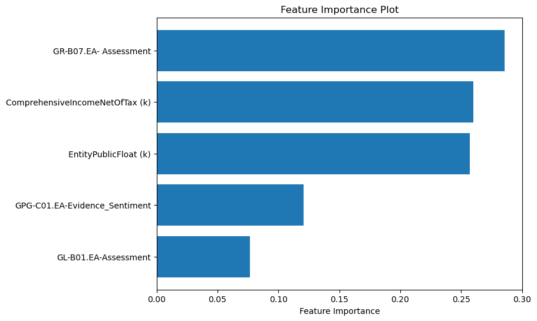

Final Report
Executive Summary
This business-oriented study analyzes the relationship between gender equality implementations, CEO gender, and financial performance across 202 companies. The findings highlight that most companies exhibit low gender equality scores, with female-led companies showing less variability and lower financial performance compared to male-led companies. The analysis suggests significant opportunities for improving gender inclusivity, which may also enhance business performance in terms of profitability and employee satisfaction. The findings are highly relevant for companies aiming to align their diversity initiatives with business success and to improve their market position by fostering a more equitable environment.
Objective
This project aims to explore the intersection of gender equality and corporate financial performance. The main objectives are:
- To identify how a company’s gender equality score correlates with its financial performance metrics.
- To examine the impact of CEO gender on gender equality practices and business outcomes.
- To provide actionable insights on how organizations can improve their gender equality measures to enhance both social and financial performance.
Key Insights
- Gender Equality in Business Practices:
The analysis reveals strong correlations between gross profit, allocated share-based compensation, and accounts receivable with the gender equality scores, suggesting that companies with gender equality tend to exhibit higher profitability, invest more in their employees, and demonstrate superior operational efficiency.
As shown in the bar chart below, workplace and supply chain are two crucial terms in the business practices and thus the implementation of the concept of gender equality pertaining to these two areas is highly significant. By examining the keywords in the text, we can find the action-oriented nature of the keywords concerning gender equality in supply chains. On the other hand, the concern over workplace keywords has more emphasis on policy, which is an indication of the greater attention that most companies lay on the reporting of these two factors: workplace and supply chain.

In addition, there are more positive emotions in the report, which might reflect that company managers want to transmit an impression to the people that their company shall be able to maintain fairness under any conditions by such positive emotions, whether or not the company genuinely fulfills this intention in practice, as shown in the following figure.

- Importance of Financial Health and Gender Equality in Procurement:
The evidence suggests that financially stable, better performing companies are more likely to procure from sources that promote the gender-equal procurement, such as women-owned enterprises. This may reflect the fact that these companies hold financial health are more likely to have some strategy of driving gender equality initiatives along the supply chain, whether intentionally or not.

- Gender Representation in Leadership:
Top-performing companies are predominantly led by male CEOs, reflecting the historical and structural barriers that have positioned men at the forefront of business leadership. This systemic dominance of male leadership underscores the challenges that must be addressed for greater gender parity in top leadership roles. Achieving more female representation in these high-performing organizations will likely require significant time and profound structural shifts.
Conversely, female-led companies may offer potential for balancing gender equality with strong financial performance. The presence of women in leadership positions can foster a positive organizational culture and enhance workplace dynamics, which may, in turn, contribute to financial growth. However, the underrepresentation of women in leadership roles, coupled with low gender equality scores, highlights the systemic issues that persist within these organizations.
Financial and governance-related factors are key in determining the gender of a company’s CEO. Based on unsupervised learning, we already know the systemic advantages of male ceos. But we wanted to explore which specific financial metrics tend to point to male CEOs and which point to female CEOs? By training gradient boosting regressor, we found that companies that have more assets and are committed to gender equality are more likely to have female ceos. On the other hand, companies with high public ownership and balanced gender representation at the governance level are more likely to hire male CEOs.

In addition, according to EDA, more female CEOs are willing to contribute to the gender pay gap.

- Factors Influencing Gender Equality Scores:
Similarly, we wanted to explore which factors significantly influence overall gender equality scores. We explored selected variables from gender-responsive procurement, financial health, and gender equality in governance. As the chart below shows, companies that demonstrate a commitment to gender equality, such as sourcing from women-owned businesses and addressing the gender pay gap, generally score higher on the gender equality assessment.

- Automated Scoring Potential:
Through text data modeling, we can automate the assessment of a company’s compliance with gender equality in an area. In this exploration, we mainly focus on health cover. We can judge whether a company fully meets, partially meets, or does not meet the gender equality criteria related to health insurance by generating a corresponding score. This automated approach allows for scalable and efficient assessments, which can make it easier for companies and policymakers to identify gaps. Below is a word cloud of keywords for health cover compliance.

Business Implications
- Addressing Gender Equality:
It indicates that existing companies have a long way to go in terms of gender equality. As the results shown, companies whose score of gender equality is higher also show for operational outcomes that might affect improved profitability and market position.
This should be worked on by all companies, improving gender equality not only because it fits into the social responsibility agenda but also because it yields benefits in financial terms, engaged employees, and operational efficiencies.
- CEO Gender and Business Performance:
The data shows that female CEOs are underrepresented and tend to lead companies with lower financial performance. This suggests that increasing the representation of women in leadership roles could have a positive effect on both gender equality and financial outcomes.
In addition, we can notice that CEOs of different genders tend to perform better on different financial metrics, which may imply differences in operational policies.
- Financial and Operational Efficiency:
Profitability differential impacts gender inclusivity practices, not in both measures of gross profit but also in finance dependent on people. Inclusiveness in the organizations would protect them from great loss due to low profitability or profit bias, especially in employee-focused and customer-related industries.
- The Overlooked Impact of Gender Equality in Supply Chains:
The supply chain seems to be an overlooked factor when assessing whether a company is taking gender equality measures, because it is not a “direct” factor. However, our research found that gender equality in the supply chain is more action-oriented, and action can better reflect a company’s determination. In addition, supply chain was the factor that had the highest impact on gender equality scores among the factors we screened. Because the supply chain is an easily overlooked factor, companies that can also focus on gender equality in the supply chain will have a higher overall rating.
Recommendations
- Enhance Gender Equality Initiatives:
Companies should adopt more stringent gender equality policies with gender-equitable opportunities for women in leadership positions. This could be mentorship programs, gender diversity training, and policies to support work and life balance.
The organizations should set clear goals in terms of diversity and subsequently track progress, in which gender equality should apply at all levels in the organization.
- Focus on Female Leadership:
It is essential that retirement to see a significant increase in the number of women in top management. It has been proved that top management gender diversity can bring improvement in organization’s climate, job satisfaction, and general performance.
Employment practice is being reviewed to take into consideration that those selected as candidates for leadership roles should also include well-qualified women.
- Leverage Financial Performance to Support Gender Equality:
Organizations should make a concerted effort to increase the representation of female executives. Research shows that gender diversity at the top can improve organizational culture, employee satisfaction, and overall performance.
They should also revise their recruitment practices in order to make sure that qualified women are recruited for leadership positions.
- Increase Transparency in Gender Equality Metrics:
Companies should publicly report on their gender equality progress to stakeholders. Such transparent reporting is now the norm for corporate governance best practices and has earned a good reputation among investors, employees and customers.
- Introduce Automated Scoring System:
When it comes to how well a company performs in gender equality, we can find information from its related news or reports, and we can find it requires a large quantity of time to assess its performance. Applying an automated scoring system will be an effective way in the future to evaluate and give senior management a more quantitative picture.
Conclusion
This study shows that gender equality is not just a moral imperative but a key factor that can drive business success. Companies with higher gender equality scores tend to perform better in operational metrics, which ultimately boosts their market position. Addressing gender imbalances at the leadership level, enhancing inclusivity practices, and aligning business operations with gender equality goals will help companies improve both their social responsibility impact and their financial performance. In addition, automated evaluation processes can help ensure social oversight of corporate behavior. Moving forward, companies should integrate diversity metrics into their corporate strategy and ensure that gender inclusivity is woven into the fabric of their business operations.